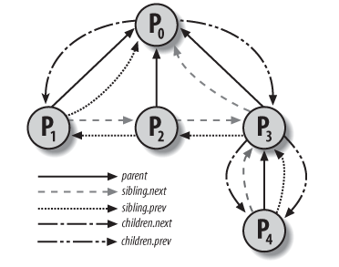
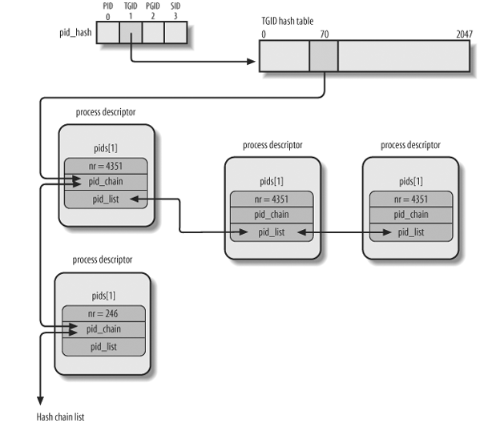

Linux Kernel: Process
Table of Contents
1 Linux Kernel: Process
1.1 进程描述符
进程描述符, 即 process descriptor, 是 kernel 用来表示进程的数据结构
1.1.1 task_struct
Process Descriptor 即 task_struct 结构体, 它的主要成员有:
struct task_struct { // 进程状态 volatile long state; // thread_info 及 kernel_stack struct thread_info *thread_info; int prio, static_prio; /* process 的第一种组织方式: prio_array_t 是一个包含 140 个 * list_head 的数组, 对应 140 个进程优先级. p->run_list 是进程 p * 在 array[p->prio] 这个 list_head 链表中的 list entry. * * 根据 task 的状态, task->array 必定指向 runqueue 中 active 或 * expire 中的某一个 prio_array_t. 所有 state 为 running (active) * 的进程 p 组织在 runqueue->active 中, 且 p->array = * runqueue->active. 所有 state 为 running (expired) 的进程 p 组织 * 在 running->expired 中, 且 p->array = runqueue->expired, 具体的 * 参考 process scheduling */ struct list_head run_list; prio_array_t *array; // process 的第二种组织方式: tasks 将所有进程组织为一个 list, 对应 // 的 list_head 为 init_task.tasks struct list_head tasks; // 和内存相关的字段, 包括 vma, pgd 等 struct mm_struct *mm, *active_mm; long exit_state; int exit_code, exit_signal; pid_t pid; pid_t tgid; struct task_struct *parent; // process 的第三种组织方式: 通过 children 和 sibling, 可以找到进 // 程的所有子进程 struct list_head children; struct list_head sibling; struct task_struct *group_leader; /* threadgroup leader */ // process 的第四种组织方式: 所有进程根据其 pid, tgid, pgid, sid 组织 // 在四条不同的 hash table 保存在 pids 数组中 struct pid pids[PIDTYPE_MAX]; // user time 与 system time, timer interrupt 时通过 // update_process_times 更新 cputime_t utime, stime; // minor fault 与 major fault 的统计 unsigned long min_flt, maj_flt; uid_t uid,euid,suid,fsuid; gid_t gid,egid,sgid,fsgid; int oomkilladj; */ char comm[TASK_COMM_LEN]; // 进程切换时需要从 thread 中获取保存的 kernel mode 下 esp, eip 等 // 信息 struct thread_struct thread; struct fs_struct *fs; struct files_struct *files; struct signal_struct *signal; struct sighand_struct *sighand; };
1.1.2 进程状态
task_struct.state 表示进程的状态:
TASK_RUNNING
进程处于 running 状态, 只是表示 schedule 时该进程可以被选择, 而并不是表示该进程一直在 "执行" 的状态.
TASK_RUNNING 状态的进程一定处于 p->array[p->prio] 链表中
TASK_INTERRUPTIBLE
TASK_INTERRUPTIBLE 的进程处于 sleeping 状态, 但可以被信号唤醒 (信号唤醒进程的过程参考 signal 相关的部分 specific_send_sig_info) 而变成 TASK_RUNNING 状态.
典型的例子比如 nanosleep 和 read(pipe) 这种阻塞
TASK_UNINTERRUPTIBLE
TASK_UNINTERRUPTIBLE 的进程处于 sleeping 状态, 但无法被信号唤醒, 典型的例子比如做 IO 时的 lock_page
- TASK_STOPPED
- TASK_TRACED
EXIT_ZOMBIE
由于 wait4, waitpid 这类系统调用在存在, 进程终止时无法直接变为 EXIT_DEAD 状态, 因为它还需要维护一些信息等待父进程调用 wait4 时返回给父进程
- EXIT_DEAD
1.1.3 识别一个进程
识别一个进程 (identifing a process), 主要是指下面这些需求:
- 如何知道当前正在执行的是哪个进程
- 如何遍历进程:
- 遍历所有进程
- 根据 pid, tgid
- 根据进程的关系
- 根据进程的状态
1.1.3.1 当前进程
首先, task_struct, thread_info 及 kernel stack 有密切的关系:
相关的数据结构的定义如下:
task_struct
struct task_struct { // ... struct thread_info *thread_info; // ... }
thread_info
struct thread_info { struct task_struct *task; // ... __u8 supervisor_stack[0]; };
thread_info 是通过 kmalloc(THREAD_SIZE) 分配的, THREAD_SIZE 根据配置不同可能是 4K 或 8K, thread_info 是通过 kmalloc 分配的, kmalloc 会保证 thread_info 一定是 4K 或 8K 对齐的 (参考 OFF_SLAB 的布局)
由于 thread_info 的对齐以及它与 kernel stack 的关系, 可以很容易的从 esp (kernel_stack) 的值得于 thread_info 的地址, 进而得到 task_struct, 这就是 current 宏的原理.
1.1.3.2 双向链表
task_struct 是用许多双向链表组织起来的, 比如:
- 所有进程
- 同 tgid 的所有进程
- 同优先级的处于 TASK_RUNNING 状态的进程
- 一个进程的所有子进程
linux 使用 list_head 数据结构来实现一个通用的链表, 并提供了一些通用的函数, 比如 list_add, list_for_each_entry 等
- list_head
struct list_head { struct list_head *next, *prev; };
- list_entry (container_of)
list_entry 的作用是给定一个 list_head, 得到外层的数据结构的地址(对应于上图中的 data structure {1,2,3})
// ptr 是 list_head, type 为 data struct 的类型, member 为 data // structure 中 list_head 对应的字段名 #define container_of(ptr, type, member) ({ \ const typeof( ((type *)0)->member ) *__mptr = (ptr); \ (type *)( (char *)__mptr - offsetof(type,member) );})
以遍历 all tasks 为例, 假设通过 list_for_each 已经拿到一个对应于 task_struct->tasks 这个 list_head 的指针为 p, 则 list_entry(p, struct task_struct, tasks) 宏可以得到对应的外层的 task_struct
- list_for_each
list_for_each 是通用的遍历链表的代码
// pos 是一个临时变量, 表示遍历过程中的"当前" list_head, // head 是代表链表头的 list_head #define list_for_each(pos, head) \ for (pos = (head)->next; pos != (head); pos = pos->next)
可见遍历结束的条件是 pos != (head), 因为 linux 的链表是双向的循环链表.
list_for_each 每次迭代拿到一个 list_head 后, 通过 list_entry 宏可以拿到对应的数据结构
- 再看 list_head
list_head 实际有几种不同的用法:
- list_head 可以用来表示它是链表的头, 这个 list_head 本身不代表链表的任何元素, 所以通过 list_entry 也是没有意义的. 链表的第一个元素是 list_entry(list_head-next). 这种 list_head 的目的就是标识一个链表
- list_head 是链表头, 但它也是代表链表的一个元素, 这种链表头的用法并不常见, 因为它无法使用 list_for_each 宏 (因为 list_for_each 会把 head 作为 case 1 中的链表头来处理). 比如 for_each_process 时使用的 init_task->tasks 就是这种链表头
- list_head 不是链表头, 而是链表中某个节点 (list entry), 这种 list_head 通过 list_entry 可以找到对应的外层数据结构
所以 list_head 实现的链表并不是一般意义上的"循环双向链表", 因为这个链表中的链表头是一个很特殊的节点: 它并不对应一个"有效"的元素, 而且链表的遍历必须从这个链表头开始: 因为如果从链表中任意一个节点遍历的话, 你无法区分遍历到的 list_head 是否是一个有效的 list entry
1.1.3.3 遍历所有进程
#define for_each_process(p) \ for (p=&init_task; (p=list_entry((p)->tasks.next, struct task_struct, tasks)) != &init_task; )
1.1.3.4 遍历所有 TASK_RUNNING 进程
遍历 TASK_RUNNING 进程是进程调度的工作之一, 为了快速找到对应某一优先级的 TASK_RUNNING 进程, linux 将所有 TASK_RUNNING 进程分为 140 个链表来管理, 每个链表对应一个优先级.
其中, task_struct->array 中保存着相应的链表头, 而 task_struct->run_list 是对应的 list entry
关于 prio_array_t, run_list 以及 runqueue->{active, expired}, 参考
1.1.3.5 遍历所有子进程
task_struct 中的 children, sibling 两个 list_head 来实现遍历所有子进程.
假设要遍历 p 的子进程, 则 p->children 是对应的链表头, 各个子进程的 sibling 是 list entry
// 获取 task 的所有子进程的代码 list_for_each(_p,&tsk->children) { p = list_entry(_p,struct task_struct,sibling); // ... }

从上图可以看到, p3 的 sibling.next 是指向 p0 的 (实际上指向 p0->children), 看起来和 sibling 的语义不符, 但却是正确的: 因为 list_for_each 的结束条件是 p != (head), 所以链表的最后一个元素需要指向链表头
1.1.4 进程之间的关系
进程之间的关系有:
- process group
- thread group
- session
task_struct 维护着各种 id 来表示这些关系
pid
pid 唯一标识一个进程或线程. 这个值也是 gettid 系统调用返回的值
tgid
线程组 id, 同一个进程 p 的所有线程的 tgid 均为 p->pid, p 称为 thread group leader. 这个值是 getpid 系统调用返回的值
pgid
进程组 id, 若 a fork b, 则 b->pgid = a->pgid, 进程组通常和任务管理有关, 例如 kill 可以给一个进程组发信号导致整个进程组的所有进程都收到信号. 通过 setpgid 系统调用, 可以给进程设置一个新的进程组, 从而断开与之前的进程组的关系
- sid
1.1.5 Pid Hashtable
task_struct->pids 用来维护四个 hash table, 分别对应 pid, tgid, pgid, sid, 以便能根据某种 id 快速找到对应的 task

相关的函数有:
- find_task_by_pid_type
- do_each_task_pid
1.2 上下文切换
进程上下文切换 (context switch) 是进程调度的一部分, 上下文切换的主要动作有两个:
切换页表
switch_mm
切换 kernel stack
switch_to
context_switch(prev, next): struct mm_struct *mm = next->mm; struct mm_struct *oldmm = prev->active_mm; if (unlikely(!mm)): // kernel_thread 的 mm 为 NULL, active_mm 为它 "借用" 的 mm, 所以这里 // next 是一个 kernel_thread, 直接使用 prev->active_mm 做为它的 // active_mm, 不再需要 switch_mm next->active_mm = oldmm; else: switch_mm(oldmm, mm, next); load_cr3(next->pgd); switch_to(prev, next, prev);
1.2.1 switch_mm 与 Kernel Thread
Context switch 时, switch_mm 的主要作用是切换 pgd, 但考虑到 kernel thread 的特殊情形: kernel thread 只需要使用 pgd 中的高 1G 的部分,而所有的页表的这部分都是一致的, 所以 kernel thread 总是会借用 "前一个" 进程的页表, 以避免因为切换页表造成的 TLB flush.
所以 switch_to kernel thread 时, 不需要 switch_mm. 参考 Kernel Thread
1.2.2 switch_to
switch_to 是实现 kernel stack 切换的主要代码.
#define switch_to(prev,next,last) \ do { \ unsigned long esi,edi; \ asm ( \ /* 保存 eflags 到 prev kernel stack*/ \ "pushfl\n\t" \ "pushl %%ebp\n\t" \ /* 保存 esp 到 prev->thread.esp*/ \ "movl %%esp,%0\n\t" /* save ESP */ \ /* 从 next->thread.esp 恢复 esp*/ \ "movl %5,%%esp\n\t" \ /* 将 label 1 设置为 prev->thread.eip*/ \ "movl $1f,%1\n\t" \ /* 将 next->thread.eip push 到 stack, jmp _switch_to \ * 返回时的 ret 指令会从 stack 上取这个 eip 做为 PC \ * 从而实现跳转到 next->thread.eip. 实际上, 这个 \ * next->thread.eip \ * 一般情况下也是 label 1, 有一个例外就是 do_fork \ * 时的 ret_from_fork*/ \ "pushl %6\n\t" \ /*__switch_to 会保存一些 FPU 等, 最重要的一点是, 它会将 \ * esp (下一个进程的 kernel stack ) 保存在 tss 中以便进程 \ * 进入 kernel mode 时能找到 kernel stack*/ \ "jmp __switch_to\n" \ tss->esp0 = thread->esp0; /* jmp ret 后, eip 和 esp 均为 next->thread 相应的值, \ * 标志着切换彻底完成 */ \ "1:\t" \ "popl %%ebp\n\t" \ "popfl" \ :"=m" (prev->thread.esp),"=m" (prev->thread.eip), \ "=a" (last),"=S" (esi),"=D" (edi) \ :"m" (next->thread.esp),"m" (next->thread.eip), \ "2" (prev), "d" (next)); \ } while (0)
需要注意的是 switch_to 时并没有保存 ebx, ecx, edx 等寄存器, 这是因为 switch_to (或者更外层的 schedule) 调用之前, p 的 user mode 的这些寄存器已经通过 SAVE_ALL (通过 system_call 或 interrupt handler) 保存在 p 的 kernel stack 了. 所以 switch_to 只需要切换 kernel stack 就可以了.
1.3 创建进程
存在三个相关的库函数以及三个相关的系统调用: fork, vfork, clone, 但通常情况下, 三个库函数最终都会调到同一个系统调用 sys_clone. sys_fork 及 sys_vfork 也是存在的, 但一般并不会使用.
1.3.1 fork 系统调用
1.3.1.1 FORK_FLAGS
- CLONE_VM
- CLONE_FS
- CLONE_FILES
- CLONE_VFORK
- CLONE_NEWNS
- CLONE_SIGHAND
- CLONE_STOPPED
- CLONE_THREAD
- CLONE_PARENT
这些 flag 主要在 copy_process 时被处理, 例如 copy_mm 时若发现 CLONE_VM, 则 child->mm = parent->mm
1.3.1.2 user mode
int fork() { int result = syscall( __NR_clone, FORK_FLAGS, NULL, /* child_stack */ NULL, /* ptid */ NULL, &(self->tid) /* ctid */ );
ENTRY(syscall) /* Push the callee save registers. */ push %ebx push %esi push %edi push %ebp /* 20(%esp) 即 syscall 的第一个参数 __NR_clone, 之所以是 20(%esp) 而不是 16(%esp) */ /* 是因为 syscall() 时会在栈上 push 一个 eip, 即当前栈上的样子为: */ /* ebp|edi|esi|ebx|eip|__NR_clone|FORK_FLAGS|NULL|NULL|NULL|tid */ /* 24(%esp) 即 FORK_FLAGS,....以此类推 */ /* 按照系统调用的约定, user mode 需要将 __NR__xxx 和所有参数依次放在 eax, */ /* ebx, ... 中 */ mov 20(%esp),%eax mov 24(%esp),%ebx mov 28(%esp),%ecx mov 32(%esp),%edx mov 36(%esp),%esi mov 40(%esp),%edi mov 44(%esp),%ebp /* 系统调用 */ int $0x80 pop %ebp pop %edi pop %esi pop %ebx ret END(syscall)
1.3.1.3 kernel mode
进入 kernel mode 前, 硬件会保证:
- esp 被切换为 kernel stack (通过 tss->esp0)
- user mode 的 esp, eip, eflags 等被 push 到 kernel stack
- 检查 int 0x80 对应的 gate descriptor 的 DPL 与 xcs 的 CPL 一致
- xcs 切换到 __KERNEL_CS (通过 date descriptor 的 segment selector) 以进入 kernel mode
进入 kernel mode 后, system_call 被调用.
- system_call
ENTRY(system_call) // 这里的 pushl %eax 实际上修改的是 pt_regs->orig_eax, 后续会根据 // orig_eax 值判断当前是否是在执行一个 syscall (例如 handle_signal). // // 然而 SAVE_ALL 时也会保存一次 %eax 到 pt_regs->eax..., 这两个 eax // 的作用是? // // pt_regs->eax 每次 interrupt 都会设置, 通过 pt_regs->eax 无法判断 // 当前是否是 syscall. 通过只在 system_call 时设置 orig_eax 可以把 // orig_eax 做成 syscall 的标记 (处理 irq 时也会 push 一个 orig_eax, // 但为一个负数, 可以与 syscall 区分, 具体参考 do_IRQ) pushl %eax SAVE_ALL GET_THREAD_INFO(%ebp) call *sys_call_table(,%eax,4) /* 在标准的 c 调用约定中, eax 保存函数的返回值, 所以 sys_clone 返回后, */ /* eax 保存返回值 (子进程 pid), 下面的 movl 指令 */ /* 将 eax 保存在 24%(esp) 处, 即 kernel stack 中对应于 SAVE_ALL 时 eax */ /* 的位置, 当 syscall 返回到父进程的 user mode 时, RESTORE_ALL 会通过 kernel stack */ /* 恢复 eax, 从而使 user mode 能拿到 sys_clone 的返回值 */ movl %eax,EAX(%esp) // 调用 RESTORE_ALL 返回前发现有其它工作要做: pending signal, // need_resched 等, 则跳转到 syscall_exit_work movl TI_flags(%ebp), %ecx testw $_TIF_ALLWORK_MASK, %cx # current->work jne syscall_exit_work // 没有其它工作, 直接调用 RESTORE_ALL, 通过 iret 返回 RESTORE_ALL syscall_exit_work: movl TI_flags(%ebp), %ecx andl $_TIF_WORK_MASK, %ecx jne work_pending jmp restore_all RESTORE_ALL work_pending: // 检查 TIF_NEED_RESCHED testb $_TIF_NEED_RESCHED, %cl // 若 TIF_NEED_RESCHED 没有置位, 跳转到 work_notifysig 检查是否有 // pending signal, 若 TIF_NEED_RESCHED 置位, 调用 schedule jz work_notifysig // 和信号处理有关 do_signal call schedule jmp restore_all
- SAVE_ALL
#define SAVE_ALL \ cld; \ pushl %es; \ pushl %ds; \ pushl %eax; \ pushl %ebp; \ pushl %edi; \ pushl %esi; \ pushl %edx; \ pushl %ecx; \ pushl %ebx; \ movl $(__USER_DS), %edx; \ movl %edx, %ds; \ movl %edx, %es;
按照系统调用的约定, user mode 需要将 __NR__xxx 和所有参数依次放在 eax, ebx, … 中, 而 sys_clone 是一个标准的 c 函数, 会从 kernel stack 中取参数, 所以在 sys_clone 之前, system_call 需要通过 SAVE_ALL 将 ebx, ecx, … 复制到 kernel stack 上
- RESTORE_ALL
RESTORE_ALL 与 SAVE_ALL 相反, 在 syscall 返回到 user mode 之前从 kernel stack 恢复 ebx 等寄存器
popl %ebx; \ popl %ecx; \ popl %edx; \ popl %esi; \ popl %edi; \ popl %ebp; \ popl %eax; \
- sys_clone
与一般 syscall 不同的是, sys_clone 的参数为 pt_regs 结构体, 实际上这个结构体与 kernel stack 是对应的, pt_regs.ebx 即对应于 SAVE_ALL 时 pushl 的 ebx
struct pt_regs { // 这几个寄存器与 SAVE_ALL 是对应的 long ebx; long ecx; long edx; long esi; long edi; long ebp; long eax; int xds; int xes; long orig_eax; // 后面这几个寄存器是发生 interrupt 时硬件自动保存在 kernel stack // 上的, 中断结束时 (或 syscall 返回到 user mode 时) iret 会负责将 // kernel stack 中的这些内容恢复到 user mode 相应的寄存器中. // // 另外, 通过查看 pt_regs 中 xcs 的值, interrupt handler 可以判断出 // interrupt 时系统是否是处于 user mode 或 kernel mode (参考 // user_mode 函数) long eip; int xcs; long eflags; long esp; int xss; };
int sys_clone(struct pt_regs regs): unsigned long clone_flags; unsigned long newsp; int __user *parent_tidptr, *child_tidptr; // regs.ebx 对应于 kernel stack 上一块区域, 这个区域的值之前 // 在 SAVE_ALL 时被赋值为 ebx, 追溯到 user mode 的 fork 实际就是 FORK_FLAGS // 这个参数 clone_flags = regs.ebx; // 同理, regs.ecx 对应 clone 的第二个参数 child_stack NULL newsp = regs.ecx; // edx 对应于 ptid parent_tidptr = (int __user *)regs.edx; // edi 对应于 ctid child_tidptr = (int __user *)regs.edi; if (!newsp) newsp = regs.esp; // regs 作为 do_fork 的参数, 后面 do_fork 会在 copy_thread 时使用 // regs 来初始化子进程的 kernel stack return do_fork(clone_flags, newsp, ®s, 0, parent_tidptr, child_tidptr);
- do_fork
do_fork: long pid = alloc_pidmap(); p = copy_process(clone_flags, stack_start, regs, stack_size, parent_tidptr, child_tidptr, pid); p = dup_task_struct(current); copy_files(clone_flags, p) // 处理 CLONE_FILES copy_fs(clone_flags, p) // 处理 CLONE_FS copy_sighand(clone_flags, p) copy_signal(clone_flags, p) copy_mm(clone_flags, p) // CLONE_VM // .... copy_thread(0, clone_flags, stack_start, stack_size, p, regs); // 复制 kernel stack childregs = ((struct pt_regs *) (THREAD_SIZE + (unsigned long) p->thread_info)) - 1; *childregs = *regs; // 但 kernel stack 中对应 eax 的部分强制为 0, 因为对子进程来说, fork 的返回值 // 应该为 0, 而系统调用的返回值是放在 eax 中的. 后面 RESTORE_ALL 使用 kernel stack // 恢复 eax 从而使它为 0 childregs->eax = 0; // 上层传过来的 start_stack 在这里被赋给 childregs->esp, 随后 child 被调度时, // iret 会导致 user mode 的 esp 被恢复为 stack_start childregs->esp = stack_start; p->thread.esp = (unsigned long) childregs; // eip 设置为 ret_from_fork, 后面 switch_to 时对子进程来说会执行 ret_from_fork // 这也是少数的 thread.eip 不等于 switch_to:label 1 的情况 p->thread.eip = (unsigned long) ret_from_fork; wake_up_new_task(p, clone_flags); return pid;
- ret_from_fork
ret_from_fork 会调用 RESTORE_ALL 然后 iret 返回到 user mode
1.3.2 关于系统调用 (syscall)
系统调用的过程在前面介绍 fork 的时候已经比较详细, 下面再总结一下:
1.3.2.1 syscall 的过程
- system call 首先是一个 interrupt, 所以硬件会先走正常 interrupt 的流程
- 从 idt 中找到 gate descriptor, 判断 xcs 的 CPL 与对应的 system gate 的 DPL 是否一致, 对 system call 来说, CPL 为 3, gate DPL 也为 3, 所以是一致的
- 比较 xcs 的 CPL 与 system gate 中指定的 segment descriptor 的
DPL 是否一致, 对于 system call 来说, xcs 对应的是 __USER_CS, 而
segment descriptor 对应的是 __KERNEL_CS, 所以是不一致的, 这时会发生 stack 的切换
- 先从 tss->esp0 获得 kernel stack 的 esp, 切换到 kernel stack
- 保存 ss, esp 到 kernel stack
- 如果 interrupt 的原因是 fault (例如 page fault), 这时会将 eip 修改为导致 fault 的指令的地址, 因为导致 fault 的代码需要在 interrupt 结束后重新开始, 对于 system call 来说, 并不需要这一步
- 保存 user mode 的 eip, xcs, eflags 到 kernel stack, 其中, 针对 interrupt 的类型: trap, fault, abort, 保存的 eip 会有差别
- 从 gate descriptor 中加载 kernel mode xcs (实际上就是__KERNEL_CS), 以及对应 handler 的 eip (system_call), 从而切换到 kernel mode 并执行 system_call
- system_call 会通过 SAVE_ALL 将 eax, ebx, ecx, edx, esi, edi, ebp 六个寄存器 push 到 kernel stack 上
- 根据 eax 的值 call 相应的 sys_xxx
- sys_xxx 会从 kernel stack 上取参数并执行
- sys_xxx 返回后 system_call 负责将用 eax 的值覆盖 kernel stack 上对应 eax 的位置
- RESTORE_ALL 会用 kernel stack 来恢复前面的六个寄存器
- 执行 iret 指令
- 恢复 eip, xcs, eip 寄存器, 由于 xcs 被恢复为 user mode 的 xcs, 所以返回到 user mode
- 检查 CPL 与 system gate 中的 segment descriptor 的 DPL 是否一致, 对 system call 来说, 必然是不一致的, 这里需要从 kernel stack 中恢复 ss 和 esp
1.3.2.2 64bit 上的 syscall
需要注意的是 64 位系统上 syscall 的定义与 32 位是不一样的, 例如
- __NR_read 在 32 位上是 3, 在 64 位上是 0
- 有些系统调用只存在于 64 位上, 例如 sys_pread64
但是对于同样是 32 位的 x86, arm, … 等, syscall 的定义是一样的
详细的差别参考:
- x86_64 如何同时兼容 32 位和 64 的 syscall
由于 x86_64 指令是兼容 x86 指令的, 所以 32 位的程序的用户态部分可以直接在 64 位上执行, 但 32 位程序在调用 syscall 时会有问题, 因为 32 位和 64 位对 syscall 的定义是不同的, 因此需要针对 32 位程序额外提供一张 sys_call_table: 32 位使用 ia32_sys_call_table, 64 位使用 sys_call_table
但有一个问题: int 0x80 对应的 interrupt handler 如何能区分使用哪张 sys_call_table?
实际上, 在 x86_64 上, int 0x80 注册的 interrupt handler 会直接调用 ia32_sys_call_table, 因为 64 位的程序是不会通过 int 0x80 发起 syscall 的, 它们会通过 syscall 这个指令, 而 syscall 指令会根据 MSR 寄存器的值找到对应的 sys_call_table. Anatomy of a system call
- sys_call_table 的初始化
syscall_init: wrmsrl(MSR_LSTAR, system_call); ENTRY(system_call): andl $__SYSCALL_MASK,%eax call *sys_call_table(,%rax,8) sys_call_table[__NR_syscall_max+1] = { #define __NR_read 0 __SYSCALL(__NR_read, sys_read) #define __NR_write 1 __SYSCALL(__NR_write, sys_write) // ... };
- ia32_sys_call_table 的初始化
trap_init: set_system_gate(IA32_SYSCALL_VECTOR, ia32_syscall); ENTRY(ia32_syscall): call *ia32_sys_call_table(,%rax,8) ia32_sys_call_table: .quad sys_restart_syscall .quad sys_exit .quad stub32_fork .quad sys_read
- sys_call_table 的初始化
- x86_64 上的 x32 ABI 与 syscall
Kernel 支持一种称为 x32 的 ABI, 这种 ABI 可以利用 64 位的优点(更多的寄存器, 使用寄存器传递参数, 更快的系统调用…), 但使用 32 位的指针和 long 类型, 避免 64 位指针的开销. https://zh.wikipedia.org/wiki/X32_ABI The x32 system call ABI
X32 ABI 需要编译器, libc 和 Kernel 的支持, 其中 libc 中通过 ILP32 (Int, Long, Pointer 32 bit) 表示使用 X32 ABI (与 ILP32 相对的是__LP64__, 即 Long Pointer 64 bit, 这是 x86_64 标准的模式)
Kernel Kernel 如何知道当前进程是使用的 X32 ABI? 通过在发起 syscall 时使用的 syscall number 上做标记:
libc 使用 ILP32 时发起 syscall
#ifdefined(__ILP32__) #include <asm/unistd_x32.h> #else #include <asm/unistd_64.h> #endif unistd_x32.h: // 其中 __X32_SYSCALL_BIT 为 0x40000000, 即 bit 31 #define __NR_read (__X32_SYSCALL_BIT + 0) #define __NR_write (__X32_SYSCALL_BIT + 1)
64 位 kernel 响应 syscall
由于 X32 ABI 下 syscall number 有额外的置位, 所以 syscall 时需要将它们 mask 掉
system_call: // __SYSCALL_MASK 为 (~(__X32_SYSCALL_BIT)) andl $__SYSCALL_MASK,%eax call *sys_call_table(,%rax,8)
kernel 使用 rax 的 __X32_SYSCALL_BIT 判断是否是 X32 ABI
is_compat_task: return is_ia32_task() || is_x32_task(); is_x32_task: if (task_pt_regs(current)->orig_ax & __X32_SYSCALL_BIT): return true; else: return false;
1.3.2.3 sysenter, syscall, vsyscall
vsyscall page 和一块特殊的 page: 这个 page 是由 kernel 分配的, 并映射到所有进程的同一块虚拟地址空间.
- x86_32 下 vsyscall page 的初始化
sysenter_setup: // 分配一个 page void *page = (void *)get_zeroed_page(GFP_ATOMIC); // 通过 fixmap 映射, 并且指定 page 的权限为 PAGE_READONLY_EXEC, 后者具 // 体为: __pgprot(_PAGE_PRESENT | _PAGE_USER | _PAGE_ACCESSED), // _PAGE_USER 这个 flag 表示这个 page 是可以被 user mode 访问的 // // FIX_VSYSCALL 这个 fixmap 对应的物理地址即是 0xffffe000 // (VSYSCALL_BASE): // // #define VSYSCALL_BASE (__fix_to_virt(FIX_VSYSCALL)) __set_fixmap(FIX_VSYSCALL, __pa(page), PAGE_READONLY_EXEC); // 如果 CPU 不支持 sysenter/sysexit, 则将 vsyscall_int80_start 处的代码 // 复制到这个 page, 否则将 vsyscall_sysenter_start 处的代码复现过来 if (!boot_cpu_has(X86_FEATURE_SEP)): memcpy(page,&vsyscall_int80_start,&vsyscall_int80_end - &vsyscall_int80_start); return 0; memcpy(page,&vsyscall_sysenter_start,&vsyscall_sysenter_end - &vsyscall_sysenter_start); on_each_cpu(enable_sep_cpu, NULL, 1, 1); // 指定了 sysenter 对应的处理函数(类似于 syscall 这个 entry): // sysenter_entry wrmsr(MSR_IA32_SYSENTER_EIP, (unsigned long) sysenter_entry, 0);
- vsyscall page 的内容
vsyscall page 被映射到的 fixmap (FIX_VSYSCALL) 的虚拟地址固定为 0xffffe000 (VSYSCALL_BASE), 通过 maps 可以看到:
maps 显示的 [vdso] 部分大小为 4k, 刚好为一个 page.
用 ldd 命令查看对应的 elf 文件:
linux-gate.so.1 => (0xffffe000) libc.so.6 => /lib/tls/i686/cmov/libc.so.6 (0xb7e45000) /lib/ld-linux.so.2 (0xb7f7a000)
其中的 linux-gate.so.1 (也可能叫 linux-vdso.so.1) 是一个虚拟的 so, 对应于前面提到的 vsyscall page.
通过下面的测试程序可以把这个 page dump 出来 (也可以用 gdb 的 dump memory 命令):
#include <unistd.h> #include <string.h> int main() { char *p = (char *) 0xffffe000; char buf[4096]; memcpy(buf, p, 4096); write(1, buf, 4096); return 0; }
察看 dump 出来的 page 的内容:
$> file syspage syspage: ELF 32-bit LSB shared object, Intel 80386, version 1 (SYSV), dynamically linked, stripped $> objdump -d syspage syspage: file format elf32-i386 Disassembly of section .text: ffffe400 <__kernel_vsyscall@@LINUX_2.5>: ffffe400: 51 push %ecx ffffe401: 52 push %edx ffffe402: 55 push %ebp ffffe403: 89 e5 mov %esp,%ebp ffffe405: 0f 34 sysenter ffffe407: 90 nop ffffe408: 90 nop ffffe409: 90 nop ffffe40a: 90 nop ffffe40b: 90 nop ffffe40c: 90 nop ffffe40d: 90 nop ffffe40e: eb f3 jmp ffffe403 <__kernel_vsyscall@@LINUX_2.5+0x3> ffffe410: 5d pop %ebp ffffe411: 5a pop %edx ffffe412: 59 pop %ecx ffffe413: c3 ret ... ffffe420 <__kernel_sigreturn@@LINUX_2.5>: ffffe420: 58 pop %eax ffffe421: b8 77 00 00 00 mov $0x77,%eax ffffe426: cd 80 int $0x80 ffffe440 <__kernel_rt_sigreturn@@LINUX_2.5>: ffffe440: b8 ad 00 00 00 mov $0xad,%eax ffffe445: cd 80 int $0x80 ffffe447: 90 nop
显示这个 page 实际是包含一个 elf, 其中定义了三个函数:
- __kernel_vsyscall
- __kernel_sigreturn
- __kernel_rt_sigreturn
其中后两个与信号的处理有关 (参考_kernel_sigreturn), 第一个 __kernel_vsyscall 和 syscall 有关
- __kernel_vsyscall
vsyscall 的想法是这样的: x86 上最初通过 int 0x80 指令发起 syscall, 但这种做法需要 CPU 做无谓的 ring 检查和切换, 所以后来 CPU 提供了一个 sysenter 指令来代替 int 0x80. 那么 libc 怎么知道当前 CPU 是否支持 sysenter?
为了简化 libc 的工作, kernel 提供了一个 __kernel_vsyscall 函数放在 vsyscall page, 确切的说, 就是 0xffffe400 这个地址. sysenter_setup 时会根据 CPU 的情况向这个地址写入对应于 sysenter 或 int 的指令, libc 在发起 syscall 时只需要 call 0xffffe400 就可以了.
需要注意的是 x86_64 下 vsyscall page 中并不存在 __kernel_vsyscall,因为 x86_64 提供了一个 `syscall` 指令, 不再需要 int 0x80 或 sysenter
- 更底什么是 vsyscall
__kernel_vsyscall 并不是 vsyscall. 无论使用 __kernel_vsyscall 还是使用 x86_64 上更快的 `syscall` 指令, 在进行 syscall 都无法避免 user mode 与 kernel mode 的切换.
那么能否更快一些, 直接避免这种切换呢?
vsyscall (virtual syscall) 就是这么一种机制. 以 gettimeofday 为例, 采用 vsyscall 调用 gettimeofday 的流程是:
- kernel 每次 update tick 时, 会向 vsyscall page 的特定区域写入当前的时间
- 当上层发起 gettimeofday syscall 时, libc 会像调用 __kernel_vsyscall 一样调用 vgettimeofday
- vgettimeofday 与 __kernel_vsyscall 一样存在于 vsyscall page 中, 这个函数只是简单的读一下 vsyscall page 中的那个时间
实际上, x86_32 上并没有 vsyscall, x86_64 上才有…所以前面 dump syspage 时并没有找到 vgettimeofday.
x86_64 上关于 vsyscall 的代码主要在 arch/x86_64/kernel/vsyscall.c 中
- libc 如何知道 __kernel_vsyscall, vgettimeofday 这些函数在 vsyscall page 中的地址?
- __kernel_vsyscall
kernel 将 __kernel_vsyscall 的地址放在 elf 的 aux vector 中
do_execve: create_elf_tables: ARCH_DLINFO // VSYSCALL_ENTRY 即为 __kernel_vsyscall 的地址: 0xffffe400 NEW_AUX_ENT(AT_SYSINFO, VSYSCALL_ENTRY);
- libc 从 aux vector 中取出 __kernel_vsyscall 的地址
- vgettimeofday
vsyscall 实际上只支持三个 syscall:
- gettimeofday
- getcpu
- time
这三个 syscall 对应的 vsyscall page 中的 vgettimeofday, vgetcpu 以及 vtime 的地址是固定的…
glibc 中关于 __gettimeofday 的代码:
#define VSYSCALL_ADDR_vgettimeofday 0xffffffffff600000 ENTRY (__gettimeofday): movq $VSYSCALL_ADDR_vgettimeofday, %rax callq *%rax ...
- __kernel_vsyscall
- VDSO
vsyscall page 被映射到固定的地址 (例如 x86_32 上的 0xffffe000, x86_64 上的 0xffffffffff600000), 所以存在安全问题. 因此 kernel 又采用了一种称为 vdso 的机制来代替 vsyscall.
vdso 可以被加载到非固定的位置, 所以通过它来实现 __kernel_vsyscall 和 vgettimeofday 会更安全. 但 vsyscall page 中的 __kernel_sigreturn 函数由于信号处理的特殊要求无法像 __kernel_vsyscall 那样被动态加载到非固定的地址, 所以 vdso 与 vsyscall page 是并存的. 在最新的 linux 4.6 x86_64 上可以看到两者共存的情况:
... 7ffd165e0000-7ffd16601000 rw-p 00000000 00:00 0 [stack] 7ffd1668c000-7ffd1668f000 r--p 00000000 00:00 0 [vvar] 7ffd1668f000-7ffd16691000 r-xp 00000000 00:00 0 [vdso] ffffffffff600000-ffffffffff601000 r-xp 00000000 00:00 0 [vsyscall]
- See also
1.3.3 Kernel Thread
1.3.3.1 Overview
Kernel thread 与普通 task 一样, 也是通过 fork 创建的, 有相应的 task_struct 结构, 与普通 task 一样进行调度…等, 但也有它特殊的地方:
- kernel thread 只会在 kernel mode 执行, 它永远不会 "返回" 到 user mode
- 它只会访问高 1G 的内存, 即它只会使用页表中对应高 1G 的部分
- kernel thread 没有任何 vma, 所以 task_struct->mm 为 NULL, 但 kernel thread 还是需要使用页表的 (mm->pgd), 所以它虽然没有 mm, 但会通过 task_struct->active_mm "借用" switch_to 的前一个进程的页表, 以避免 TLB flush
1.3.3.2 创建 kernel thread
- kernel_thread
kernel thread 与普通进程一样, 也是通过 do_fork 创建的, 但有些差别
kernel_thread: struct pt_regs regs; memset(®s, 0, sizeof(regs)); // 后面的 kernel_thread_helper 会使用这两个值 regs.ebx = (unsigned long) fn; regs.edx = (unsigned long) arg; // 在这里修改了 regs.eip 和 regs.xcs, 当 do_fork 出来的子进程通过 // ret_from_fork 返回时, interrupt 的通用代码会使用 regs 恢复 eip, xcs, // esp..., 对于 syscall 来说, 这部分操作相当于"返回 user mode", 但对于 // kernel_thread 来说, 这一步操作会导致执行路径跳转到 kernel thread 的 // fn // // regs.xcs 为 __KERNEL_CS, 表明 kernel thread 运行在 kernel mode // regs.esp 这里并没有特别赋值, 是因为 iret 时因为 regs.xcs 提前已经修 // 改为 __KERNEL_CS, 导致 cpu 认为本次 interrupt 并没有发生 stack 的切 // 换, 所以 esp 在 iret 时并不需要切换为 regs.esp, 具体参考[[*关于系统 // 调用][关于系统调用]] 的第 2 点 regs.eip = (unsigned long) kernel_thread_helper; regs.xcs = __KERNEL_CS; regs.eflags = X86_EFLAGS_IF | X86_EFLAGS_SF | X86_EFLAGS_PF | 0x2; // do_fork 的第二个参数为 stack_start, 这里为 0, 所以 ret_from_fork 时, // regs.esp 会被修改为 0, 但并没有什么用, 因为 iret 时并不会通过 // regs.esp 恢复 esp return do_fork(flags | CLONE_VM | CLONE_UNTRACED, 0, ®s, 0, NULL, NULL);
- kthread_create
kernel thread 是通过 fork 创建的, 那么 fork from "who" 是一个问题.
如果一个普通进程进入 kernel 后通过 kernel_thread 创建了一个 kernel thread, 那么这个 kernel_thread 会与这个普通进程共享许多东西: mm, fs, files … 然而这些共享并没有必要, 因为 kernel thread 根本不需要它们.
另外, fork 还会导致 kernel thread 继承普通进程的属性, 例如 priority, schedule policy, uid 等, 这些也不是 kernel 期望的
因此, kernel 提供了一个函数 daemonize, 让 kernel thread 可以释放这些不必要的资源, 并且恢复一些进程属性到默认值
以 loop.c 为例:
lo_ioctl: // ioctl 来自 syscall, 所以这里调用 kernel_thread 的话会导致创建的 // kernel thread 与发起 ioctl 的普通进程共享资源 loop_set_fd kernel_thread(loop_thread, lo, CLONE_KERNEL); loop_thread: daemonize("loop%d", lo->lo_number); exit_mm(current); // Block and flush all signals sigfillset(&blocked); sigprocmask(SIG_BLOCK, &blocked, NULL); flush_signals(current); exit_fs(current); */ fs = init_task.fs; current->fs = fs; exit_files(current); current->files = init_task.files; reparent_to_init(); current->parent = child_reaper; current->real_parent = child_reaper; if ((current->policy == SCHED_NORMAL) && (task_nice(current) < 0)): set_user_nice(current, 0); memcpy(current->signal->rlim, init_task.signal->rlim, sizeof(current->signal->rlim)); switch_uid(&root_user);
既然这样, 为什么不直接从一个 kernel thread 来 fork 出另一个 kernel thread 呢?
kthread_create 就是做的这件事: 通过 kthread_create 可以给 keventd 发送一个消息 (workqueue), keventd 负责调用 kernel_thread 来创建 kernel thread.
1.4 销毁进程
进程销毁有两个相关系统调用:
exit_group
整个线程组的所有线程都会退出, libc 中的 exit 函数会调用 exit_group
_exit
只会导致当前线程退出, libc 中的 pthread_exit 会调用 _exit
1.4.1 main 返回
c 程序中 main 函数的调用路径为:
__start: __libc_start_main exit(main())
所以 main 返回后 exit 会被调用, 整个线程组都会退出.
1.5 Appendix
1.5.1 0 号进程与 1 号进程
0 号进程, 即 swapper, idle 或 init_task. kernel 启动时是以 0 号进程(后面统称 swapper) 的身份在运行的
- 首先, swapper 对应的 task_struct 为 init_task, 是静态初始化的, 其中最重要的数据结构是 init_task->thread_info, 也是静态初始化的, 为 init_thread_info.
head.S 定义了一个 entry 为 stack_start
ENTRY(stack_start) .long init_thread_union+THREAD_SIZE .long __BOOT_DS ready: .byte 0
其中的 init_thread_union 与 init_thread_info 地址相同
- startup_32 时会将 stack_start 设置为初始的 esp, 从此以后 kernel 相当于以 swapper 进程的身份在运行了
kernel 启动的最后阶段, 调用了 rest_init 来启动 1 号进程 (init), 同时自身通过运行 cpu_idle 变成名副其实的 idle 进程
rest_init: kernel_thread(init, NULL, CLONE_FS | CLONE_SIGHAND); cpu_idle(); while (1): while (!need_resched()): // idle cpu_relax() schedule()
- swapper 也是一个进程, 所以它也会参与到进程调试中, 只不过它是进程调试最后的选择